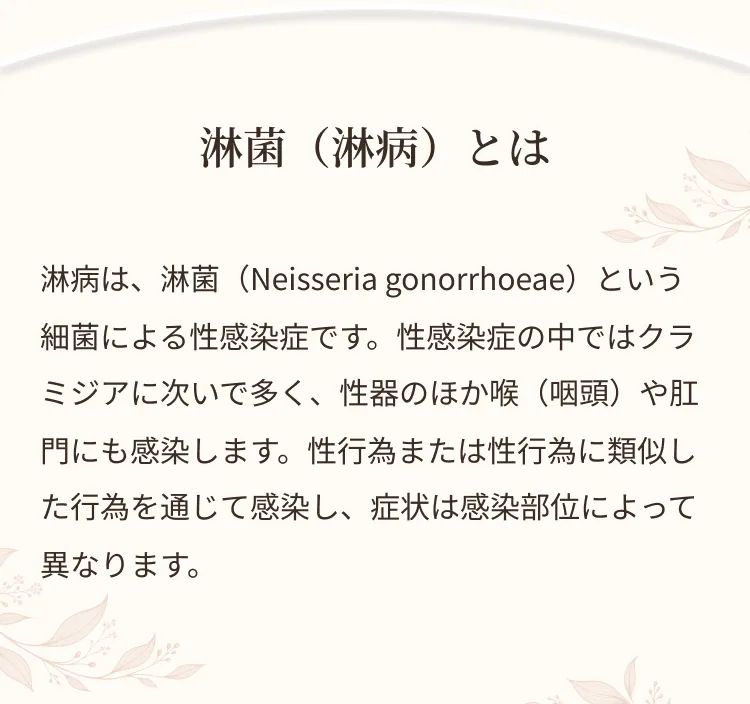
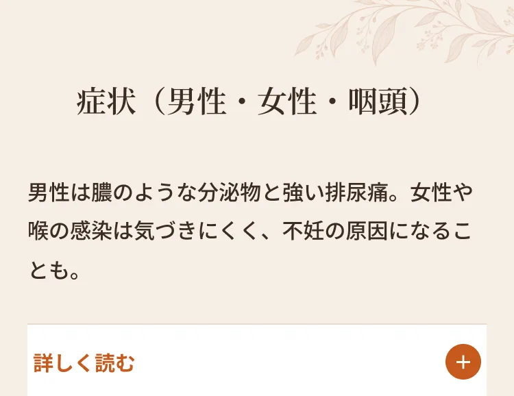
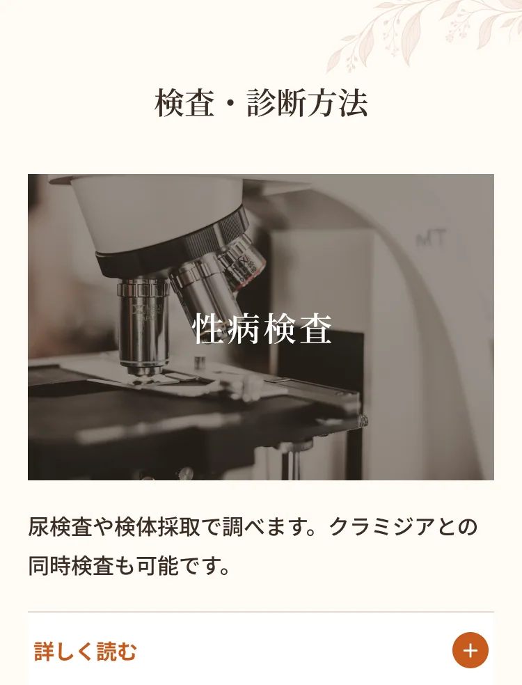
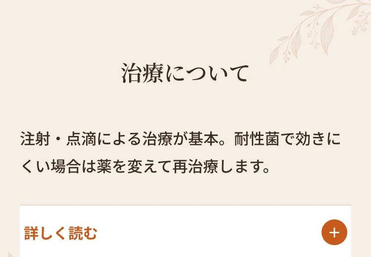
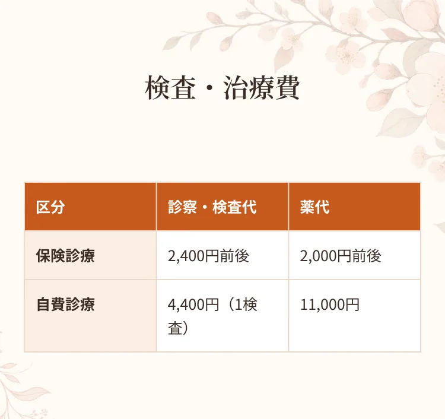
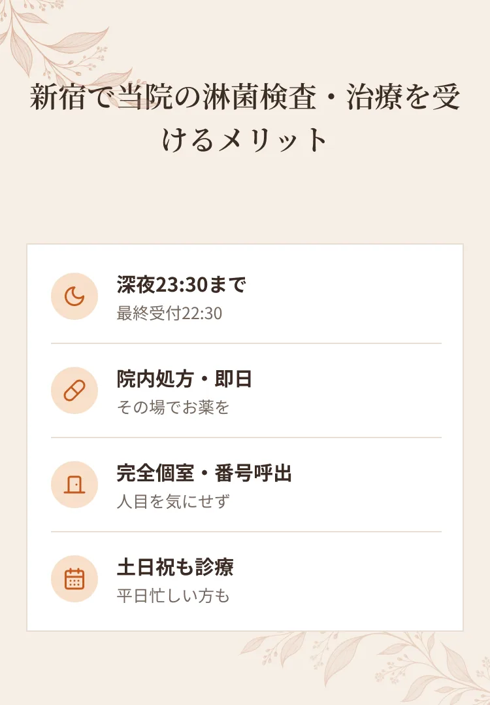
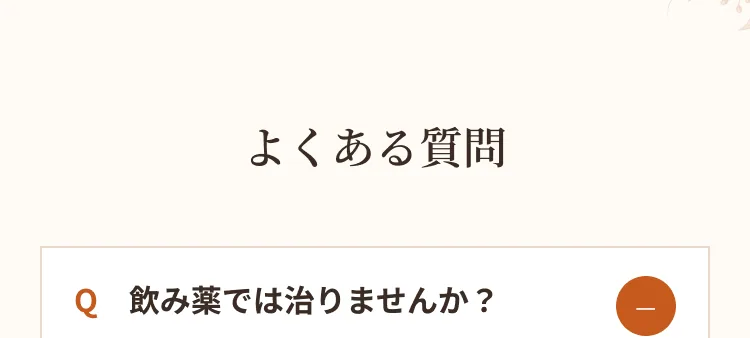
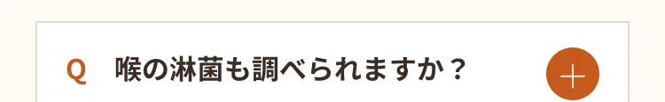
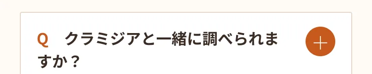
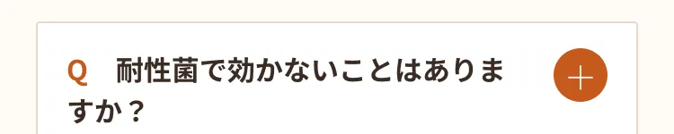

新宿駅から徒歩6分、エイチクリニック新宿では、淋菌（淋病）の検査・治療を行っています。淋病はクラミジアに次いで多い性感染症で、男性では強い排尿時の痛みや膿状の分泌物が出ることが多く、女性では症状が軽いまま進行することがあります。喉や肛門にも感染し、放置すると不妊などのリスクにつながることもあります。当院は匿名検査・即日結果が可能な検査に対応し、深夜23時30分まで・土日祝も診療。完全個室・呼び出し番号制で、人目を気にせず受診できます。


男性は淋菌性尿道炎を起こしやすく、尿道からの黄色い膿状の分泌物や強い排尿時の痛みが主な症状です。女性は子宮頸管炎が多く、症状が軽いことが多いものの、おりものの異常や排尿時痛、下腹部の違和感がみられることがあります。気づかずにいると炎症が卵管まで及び、不妊の原因となることがあります。咽頭に感染すると喉の痛みや腫れが出ることがありますが、無症状のことも多く見逃されやすいため注意が必要です。目に感染すると、まぶたの腫れや膿性の分泌物がみられることもあります。


淋病が疑われる場合、尿検査や検体採取で調べます。咽頭淋菌が心配な場合は、うがい・採取による検査を行います。クラミジアと症状が似ており複合感染することもあるため、淋菌とクラミジアを同時に検査することがあります。

当院では、淋菌性尿道炎には注射（トロビシン）、咽頭淋菌には点滴（ロセフィン）による治療を基本としています。近年は耐性菌が増えており、効果が不十分な場合があります。その際は抗菌薬を変更して再度治療を行います。淋病は内服薬だけでは治りにくいことがあるため、注射・点滴での確実な治療が重要です。治療後はパートナーの検査・治療もおすすめします。



A.淋菌は内服だけでは治りにくいことがあり、当院では注射・点滴での治療を基本としています。

A.うがい・採取で咽頭淋菌の検査ができます。

A.複合感染のことがあるため同時検査が可能です。

A.効果が不十分な場合は薬を変更して再治療します。

A.深夜23:30まで（最終受付22:30）対応しています。